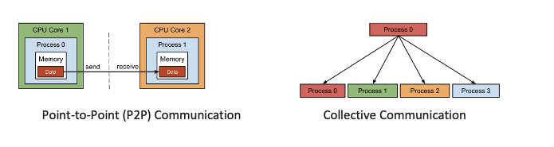
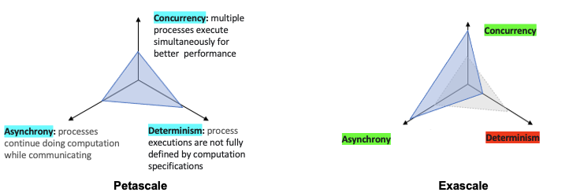
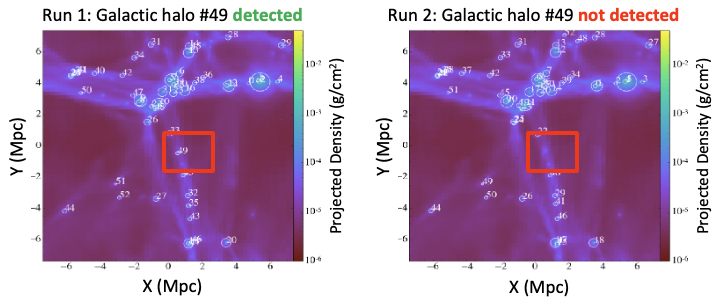

In this chapter, we will introduce MPI and how Non-determinism occurs in MPI applications. We will discuss about this phenomenan with examples. And finally we will discuss about the
impact of this phenomenan on scientific applications.
Message Passing is the defacto coding standard for parallel applications on distributed systems at peta and exascale. MPI is not a programming language; rather, it is a library of functions that developers
can utilize within C, C++, or Fortran code to write parallel programs.
MPI helps communication between two and more computing nodes to share data using message passing through three different communication methods:
Point-to-Point Communication
Collective Communication
One Sided Communication where a process can directly access the memory space of another process without involving it.

Different communication methods in MPI. Source: 1
When a parallel program exhibits non-deterministic behavior, it means that multiple executions of the same program with the same inputs can produce different results.
In the context of MPI, non-determinism can occur due to factors such as message ordering, synchronization,
and race conditions between processes.
The examples below demonstrate how non-determinism arises im MPI applications.
When thread/process order influences arithmetic order, we can get some unexpected results across runs. Sure, 10-9 seems
like a small error, but it can get "not-so-innocent".
Here when the sum is the denominator of something, It's the difference between a normal arithmetic execution and an FPE( floating point exception)
Peta to Exa Scale
At the exascale level, MPI applications commonly trade determinism for prioritizing on asynchrony and concurrency. This shift enables improved performance and efficiency in large-scale parallel computing tasks.

Message-Passing Applications: From Peta to Exascale
In a case study 2 on HPC debugging, scientists encountered a non-deterministic bug causing intermittent hangs after several hours of execution. The bug, found in the linear algebra package HYPRE 2.10.1 used by their research application Diablo, disrupted their work for 18 months. It took over 10,000 hours (about a year) of compute time to locate and diagnose the issue.
Impact in Scientific Correctness

Real case example: Impact on Scientific correctness
The study 3 illustrates how non-determinism affects the reproducibility of scientific results, showcasing a simulation of galaxy formation using the Enzo code 4. Discrepancies in outputs undermine the reliability of conclusions drawn from simulations, and despite efforts, the exact causes of these disparities remain poorly understood.